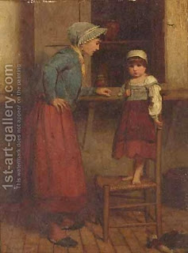

Menachot 91 - Which Offerings Require Libations
The Torah said, "When you shall make a fire offering to God, burned offering, or another sacrifice." I might have thought that any offering that goes on the fire requires libations, and even an offering of flour requires another flour libation with it. The prevent this, the Torah states "burned offering," to exclude a flour offering. And how do I know that a peace offering requires libations? From the words "another sacrifice."
Among the sin-offerings, only the sin-offering of a metsorah (spiritual leper) and his guilt-offering require libations. How do I know that? The Torah stated, "the three tenths of fine flour for a flour offering," - and this is talking about an animal sacrifice of a metzora. But perhaps he should bring a flour offering by itself? - Since the Torah later says "the kohen shall offer the burned offering and flour," this leads me to understand that the Torah is speaking about the flour that comes with the animal offering.
Art: James Hayllar - Guilty Or Not Guilty